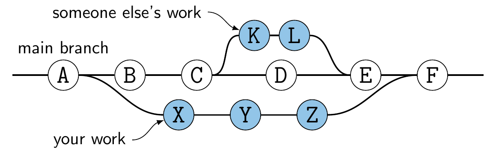
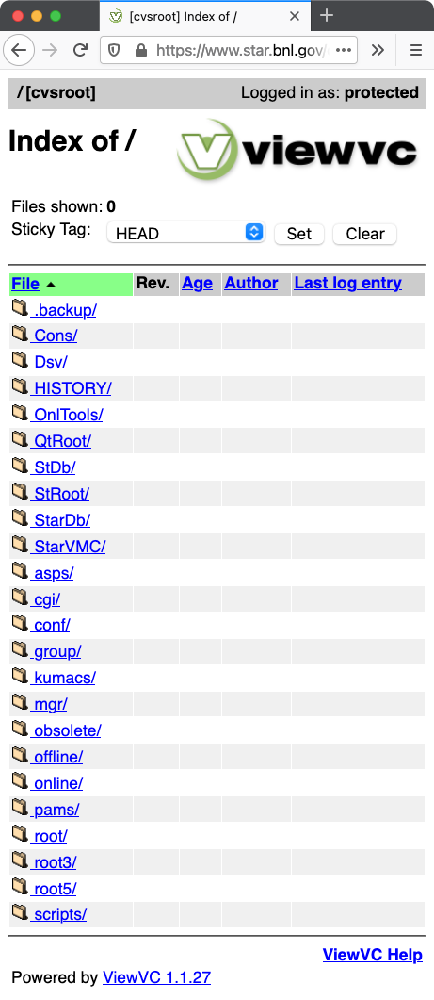
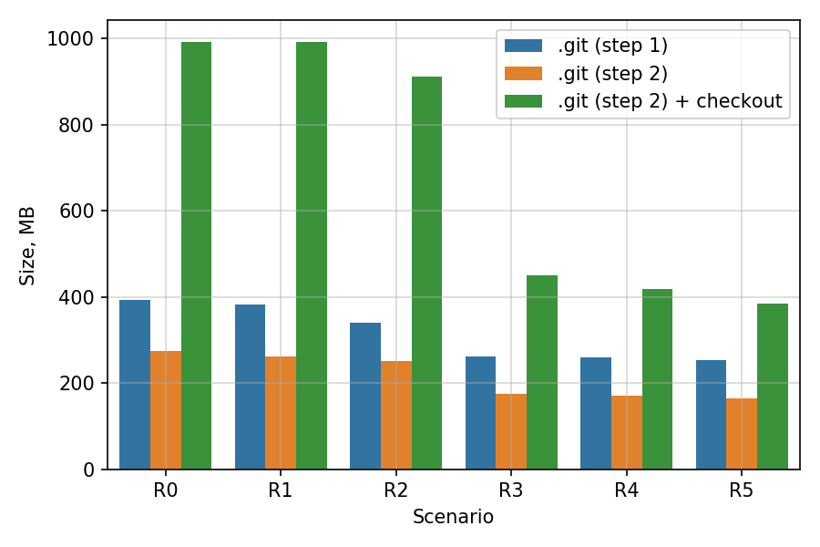
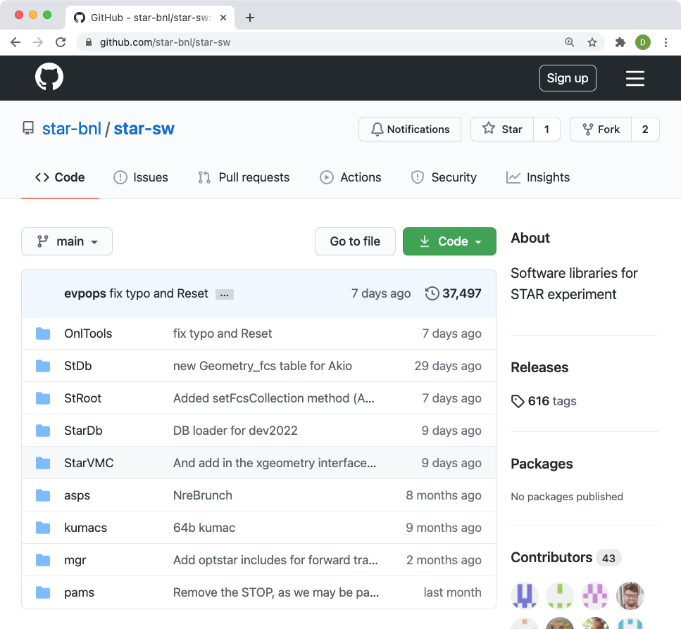

Migrating STAR Code to Git
Dmitri Smirnov for the STAR S&C
NPPS Group, BNL
STAR Collaboration Meeting, March 8, 2021
Updated
<h1>Motivation</h1> - For over 20 years STAR relied on **`CVS`**, a centralized version control system, for storing code, external packages, and even calibration data and analyses notes - **`Git`** is a distributed version control systems. The principal difference between **`CVS`** and **`Git`** is usually regarded as the ability for each developer to have the full control over a local copy of the entire code revision history -  **`Git`** has powerful branching capabilities. Developing new features on a new branch ensures that the main branch is not affected - Creating and merging branches in **`Git`** is admittedly easier than in **`CVS`** - **`Git`** is widely accepted by software developers owing to its usability and performance - Many nuclear and particle physics experiments have switched to **`Git`** long time ago. See public repositories of [ALICE](https://github.com/alisw), [ATLAS](https://gitlab.cern.ch/atlas), [CMS](https://github.com/cms-sw/), DUNE, [EIC](https://github.com/eic/), sPHENIX - STAR is probably the only active NPP experiment that does not use **`Git`**
<h1>Working with CVS</h1> <div style="display: flex; margin-left: 0em;"> <div style="width: 24%;">  </div> <div style="width: 76%; font-size: 100%;"> - STAR code is distributed via AFS and requires additional security measures even for read-only access <pre class="code"><code data-trim class="shell"> /afs/rhic.bnl.gov/star/packages/repository </code></pre> - In general, working with STAR code on a machine outside of RACF facilities requires a non-trivial setup - Running full simulation or a reconstruction job on a user desktop/laptop is not a straight forward task <hr width=50%> - <div style="float: right; font-size:80%;"> <pre><code data-trim class="shell"> ... 53M ./asps 67M ./HISTORY 126M ./StarVMC 134M ./pams 151M ./CVSROOT 546M ./obsolete 603M ./StarDb 606M ./online 684M ./StRoot 23G ./offline 26G . </code></pre> </div> The large repo size built up over the years may not look attractive to new contributors. One needs to know exactly what to checkout - Peer reviews are done only for completely new code. Little chance to review or comment on follow-up changes </div> </div>
<h1>Migrating STAR Code to Git</h1> <div style="font-size: 100%;"> - Switching to Git can be seen as an opportunity to reduce the size of the codebase without affecting the primary objectives—event simulation and reconstruction - The focus of this migration is on the "offline" code responsible for event reconstruction, geometry, simulation, calibration, and database interaction - A significant fraction of the "offline" code consists of external MC generators (Pythia, HIJING, UrQMD, ...). Since these are rarely touched it was decided to extract these codes in a separate repository  - After considering several skimming scenarios the one producing main repo with a bare size of abot 180MB was selected. For details see [Backup Slides](#/excluded) - All tools and scripts necessary to perform the migration are available from a separate repository hosted on **GitHub**<br> https://github.com/star-bnl/star-git-tools - <span style="font-size: 80%;">With little effort the scripts can be reused to extract the rest of the code from CVS, e.g. the "online" code</span> </div>
<h1>Hosting Git Repositories</h1> <div style="font-size: 90%;"> - Following the practice established by other experiments and the BNL NPPS group, **GitHub** is chosen to host the STAR's Git repository  - **Github** services offer easy auditing of branches and code merges - Convenient interfaces for new code integration, peer reviews, and issue follow-ups - For students additional exposure to popular software development tools and services - The two primary repositories are available on **GitHub** and synced with CVS on a daily basis - https://github.com/star-bnl/star-sw — Contains most of the migrated code except MC generators - https://github.com/star-bnl/star-mcgen — Contains MC generators and the respective interfaces to `starsim` - Since the above repositories currently operate in read only mode another repository was created for testing purposes. It can be used to test **GitHub**'s interface, e.g. create issues, pull requests, etc. - https://github.com/star-bnl/star-sw-test </div>
<h1>Typical Workflow with Git Repositories</h1> <div style="font-size: 95%;"> - **Note**: A GitHub account is required for work with the new Git repositories - Various notifications may be sent to your email as essential part of the work. They are highly customizable via your account settings - The expected workflow with a central repository is very typical and common for many projects hosted on GitHub: - **Fork the repo.** Create a "copy" of the central repository under your account - **Clone your fork.** Create a local "copy" of the repository on your machine ```shell $ git clone git@github.com:<account>/star-sw.git ``` - **Make changes locally.** Create clean commits with informative log messages by using the full power of Git tools 😀 - **Push to your fork.** Send the changes to your fork hosted on GitHub ```shell $ git push ``` - **Create a pull request.** Let others know that you want to merge your changes into the central repository - Documentation and tutorials on both Git and GitHub available online. See [Backup Slides](#/documentation) </div>
<h1>Notes on Policies</h1> <div style="font-size: 90%;"> - GitHub allows to configure and enforce certain workflows for collaborative development. We suggest to start with rules consistent with historical development in CVS - **Protect all branches:** Disable force pushes and prevent branches from being deleted - **Maintain linear history:** Prevent merge commits from being pushed to branches - Linear history is usually easier for humans to understand and debug - **Require pull requests on GitHub** as the only way to merge commits onto remote branch - Direct pushes to remote branches are disabled for all collaborators - PRs encourage better documentation of proposed changes (via GitHub interface) - **Require pull request reviews before merging** - GitHub can suggest reviewers based on historical code changes - We suggest two required approving reviews from code owners/maintainers before a pull request can be merged - Similar to `CVSROOT/avail` we create a `CODEOWNERS` file in our repository mapping subdirectories to specific people whose approval is required. For example, see https://github.com/star-bnl/star-sw-test/blob/main/.github/CODEOWNERS - In cases when reviewers cannot be easily identified the Infrastructure Team will step in </div>
<h1>Sparse Checkout and Partial Clone Features</h1> <div style="font-size: 90%;"> <span style="font-size: 80%;">**Note**: The size of `star-sw` bare and checked out `HEAD` is 180MB and 470MB. The quota for STAR users on RACF is 25GB</span> - **Sparse checkout** is a checkout of a pre-selected subset of subdirectories specified by the user. The complete history is still available locally in local `.git` directory <!-- Can be converted to a full checkout any time It is available since early versions of Git and works reliably. UI improved in recent versions --> - **Partial clone** allows to limit the number of past file revisions immediately available for offline work. The initially missing information is downloaded later if needed transparently to the user. Works well in conjunction with sparse checkouts. <!-- It is a relatively new feature (documented in recent versions). UI does not appear very stable --> - Custom Git commands for STAR users can be installed from https://github.com/star-bnl/star-git-tools </div> <div style="display: flex; margin-left: 1em;"> <div style="width: 65%;"> **CVS like checkout** <pre style="font-size: 0.80em;"><code data-trim class="shell"> $ git star-checkout StRoot/StMuDSTMaker StRoot/StPicoEvent Cloning into 'star-sw'... $ tree -a -L 2 star-sw/ star-sw/ |-- .git | ... `-- StRoot |-- StMuDSTMaker `-- StPicoEvent </code></pre> </div> <div style="width: 35%;"> **Manageable size** <pre style="font-size: 0.80em;"><code data-trim class="shell"> $ du -b --si -d1 star-sw/ 29M star-sw/.git 1.3M star-sw/StRoot 30M star-sw/ </code></pre> </div> </div>
<h1>Summary and Timeline</h1> <div style="font-size: 90%;"> - All technical procedures needed to perform the migration of the code from CVS to Git are in place. The final steps are ready to be executed - Code migrated from CVS is available for collaboration reviewal from Git repositories hosted on GitHub - [**`star-sw`**](https://github.com/star-bnl/star-sw) — The primary repository with the code migrated from CVS - [**`star-mcgen`**](https://github.com/star-bnl/star-mcgen) — External MC generators and `starsim` interface - [**`star-sw-test`**](https://github.com/star-bnl/star-sw-test) — Test repo for collaborators to play with GitHub interface - [**`star-git-tools`**](https://github.com/star-bnl/star-git-tools) — Handy utilities, tools, and documentation - **The Production Team has independently tested and confirmed identical performance from builds based on code from CVS and Git** - The Infrastructure Team is ready to make the switch on any date agreed by the collaboration - The exact date for the transition is to be established by the S&C and STAR management - We are trying to assess the concerns expressed by the Online Computing Team about their specific usage of CVS during the ongoing data taking <hr width=80%> <div style="margin-top: 0em; text-align: center;">Any feedback is very welcome. We will try to respond to any concerns you may have</div> </div>
Backup Slides
<h1>Documentation</h1> - Tons of documentation and guides for Git and GitHub available. Online resources cover everything from very basic and common operations to advanced topics: - https://docs.github.com/ — Documentation for GitHub interface and features - https://www.atlassian.com/git/tutorials/ — Tutorials, e.g. workflows explained - https://git-scm.com/book/ — Reference for all Git CLI utilities
<h1>Final Steps for Code Migration</h1> <div style="font-size: 100%;"> - A list of action items for the "switch day" - In `CVSROOT/avail` disable write access to top-level directories transferred to Git for all users - Tag the code in CVS with next `SLx` tag - Do final synchronization between the CVS and Git repos and stop the crontab jobs - Push `CODEOWNERS` file to `star-sw` - The Production Team switches the nightly builds and tests to use the source code from the Git repos </div>
<h1>Excluded Paths</h1> - CVS paths excluded from `star-sw` <pre style="width: 800px; height: 200px; font-size: 0.8em;"><code data-trim class="shell"> - /.backup - /Cons - /CVSROOT - /cgi - /conf - /Dsv - /group - /HISTORY - /obsolete - /offline - /online - /pams/gen - /quaranteene.zip - /RealFiles.lis - /root - /root3 - /root5 - /StarDb/AgiGeometry - /StarDb/VmcGeometry - /StRoot/StarGenerator/Hijing1_383 - /StRoot/StarGenerator/Photos3_61 - /StRoot/StarGenerator/Pepsi - /StRoot/StarGenerator/Pythia6_2_22 - /StRoot/StarGenerator/Herwig6_5_20 - /StRoot/StarGenerator/Pythia6_4_23 - /StRoot/StarGenerator/Pythia6_4_28 - /StRoot/StarGenerator/HepMC2_06_09 - /StRoot/StarGenerator/EvtGen1_06_00 - /StRoot/StarGenerator/Tauola1_1_5 - /StRoot/StarGenerator/Pythia8_1_62 - /StRoot/StarGenerator/Pythia8_1_86 - /StRoot/StarGenerator/Pythia8_2_35 - /StRoot/StarGenerator/UrQMD3_3_1 - /scripts - /QtRoot </code></pre> - Also exclude files larger than 200 kB and not present in any release/tag SL1* or SL2* - For the actual list of directories and files excluded from the conversion refer to https://github.com/star-bnl/star-git-tools/tree/master/util
<h1>Additional Notes</h1> - The centralized nature of **`CVS`** requires a stricter and more rigorous control over developers allowed to make changes to the public repository - There is a big gap between users with write access and everyone else - There is an opinion that in software development it is better to rely on social restrictions (such as code reviews) than on technical restrictions - Require status checks to pass before merging. Currently, there are no automatic status checks - Require branches to be up to date before merging